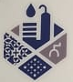
مؤسسة الفحص الذكي للعوازلاتصل 0532701009نقدم في الخرج كشف تسربات المياه وعزل الأسطح والخزانات للفلل والمنازل والاستراحات والمنشآت التجارية، مع معاينة ميدانية تحدد سبب المشكلة قبل البدء.
كثير من المباني في الخرج فلل ومنازل مستقلة بأسطح واسعة معرّضة للشمس طوال اليوم، وهذا يسرّع تشقق الطبقات القديمة. نعالج الشروخ أولاً ثم نركّب طبقات العزل المناسبة لمساحة السطح وحالته.
تنظيف السطح، حشو الشروخ بـ Sikoblock، برايمر، طبقتان بشبك فايبرجلاس / DCP، ثم طبقة أكريليك حامية. ضمان مكتوب 10 سنوات.
نحدد موضع التسرب بالأجهزة قبل فتح أي مكان، فلا نكسر عشوائياً.
خزانات أرضية وعلوية: فحص التسرب ثم العزل المناسب للخزان.
معالجة الرطوبة والتسرب في الأرضيات والجدران قبل أن تتلف التشطيبات.
حماية العناصر الإنشائية من الرطوبة والمياه الجوفية.
نسلّم لك شهادة ضمان مختومة برقم السجل التجاري، تنص على ضمان أعمال العزل والصيانة لمدة 10 سنوات من تاريخ التسليم. وتوضح الشهادة خطوات العمل بالترتيب: تنظيف السطح، معجونة سيكوبلاك للشقوق، برايمر، طبقة شبك فايبر، طبقة DCP، ثم طبقة أكريليك حامية.
يسقط الضمان عند سوء الاستخدام أو إساءة معاملة المنتج، كما هو مكتوب في الشهادة.
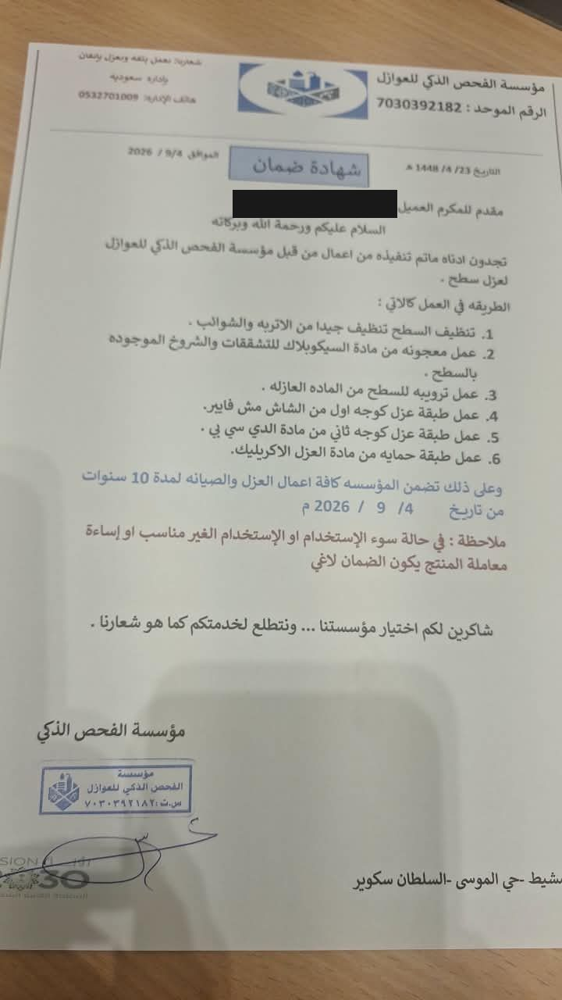
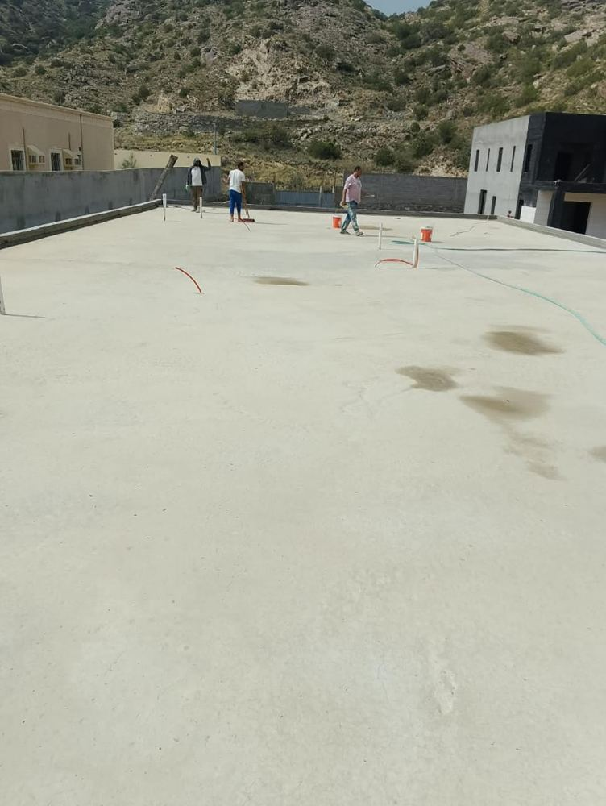
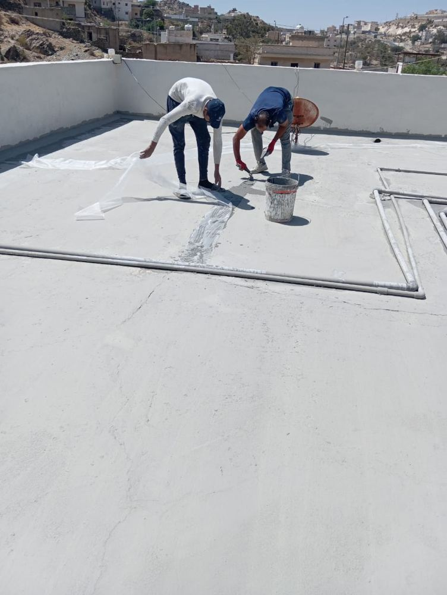
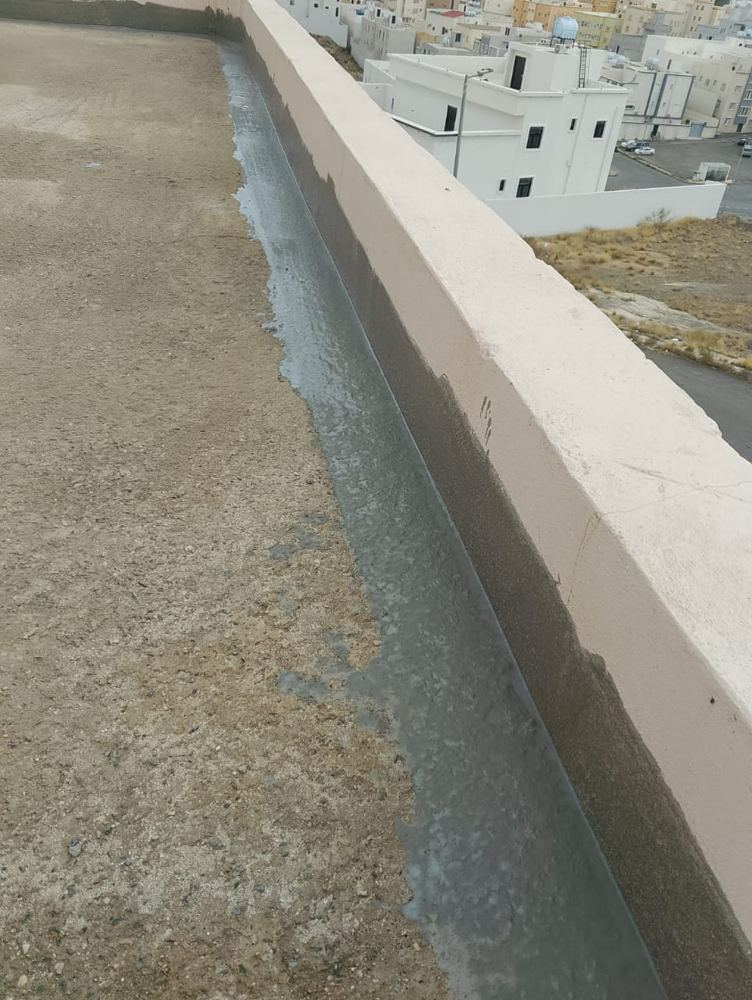
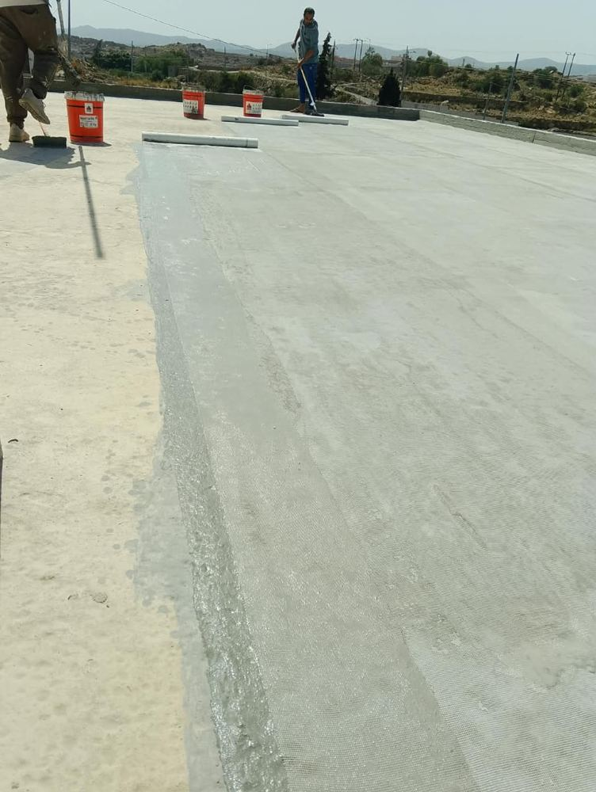
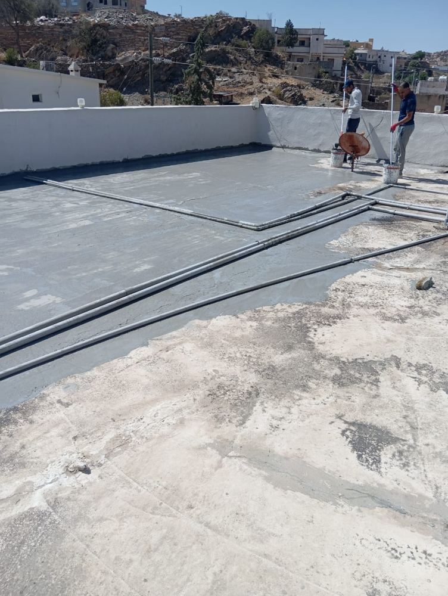
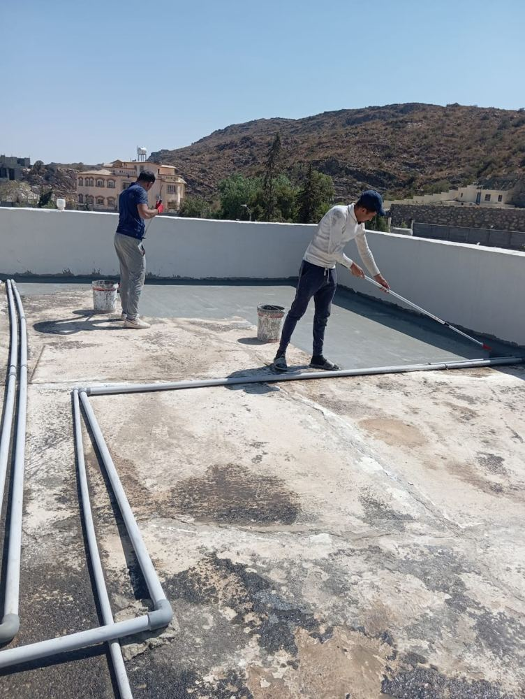
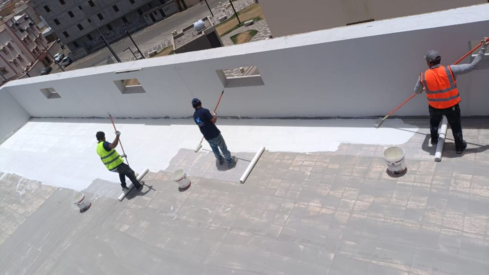
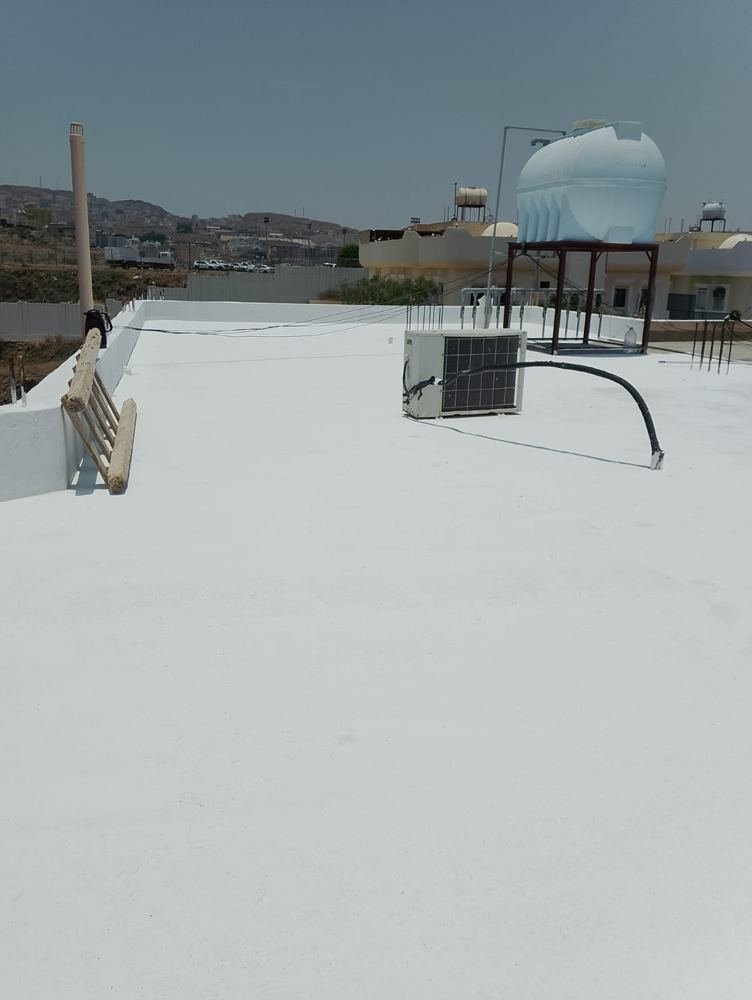
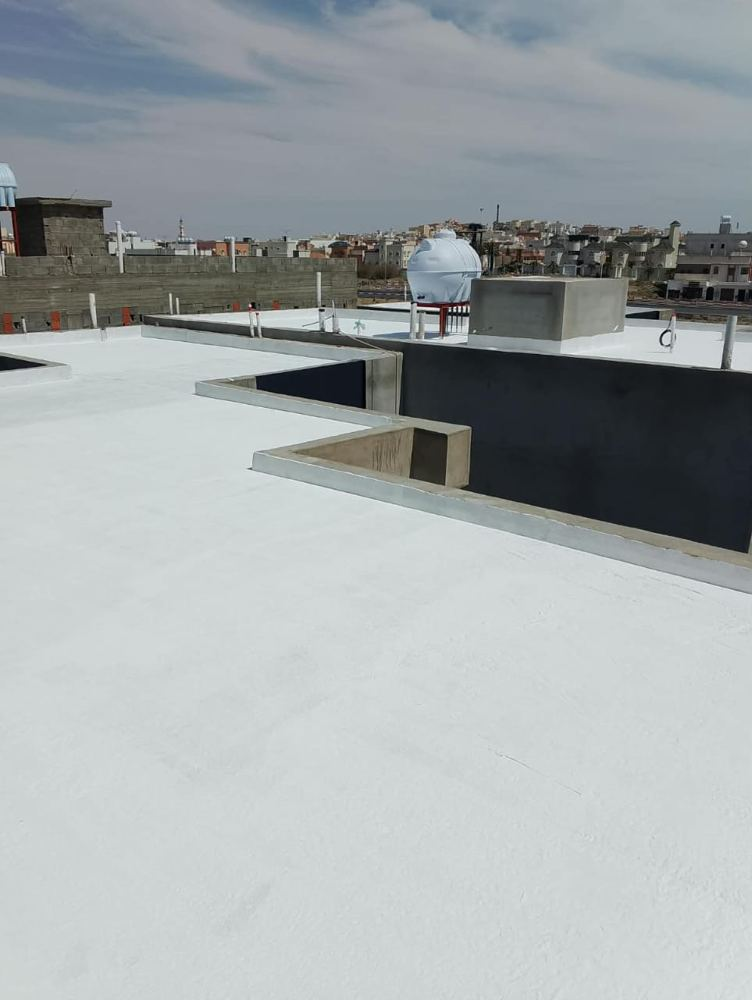
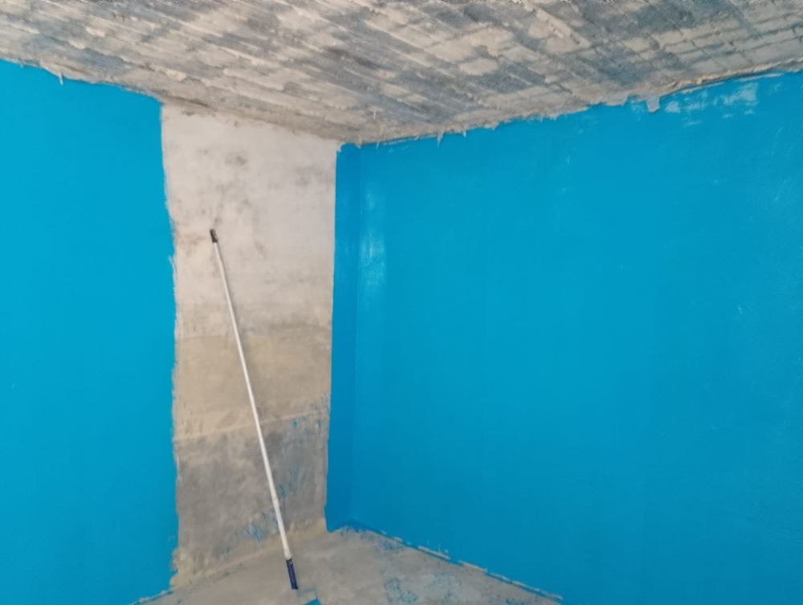
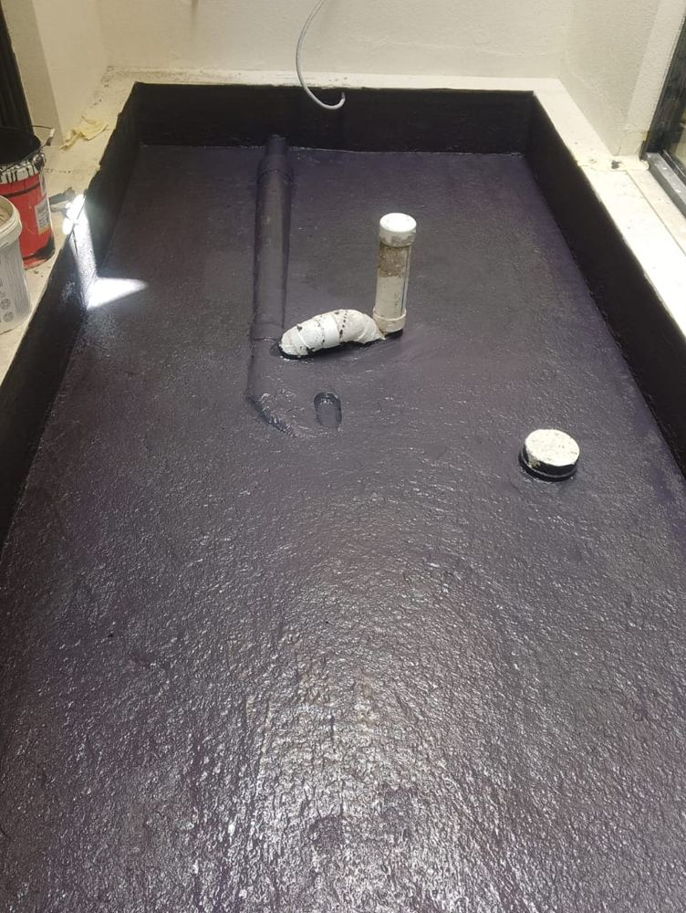
السعر في الخرج يختلف حسب مساحة السطح وحالته وعدد الطبقات المطلوبة وصعوبة الوصول. لذلك لا نذكر سعراً قبل المعاينة والفحص؛ نحدد السعر بعد الفحص ونعرضه عليك بوضوح قبل البدء. للاستفسار تواصل معنا اتصالاً أو واتساب.
إذا ظهرت رطوبة حول الخزان أو انخفض منسوب المياه بلا استهلاك، فالأفضل فحصه. نكشف التسرب أولاً ثم نحدد هل يلزم عزل داخلي أو خارجي للخزان الأرضي.
نعم، نحدد موضع التسرب بالأجهزة أولاً ثم نفتح الموضع المحدد فقط، فيقل التكسير والتلف في التشطيبات.